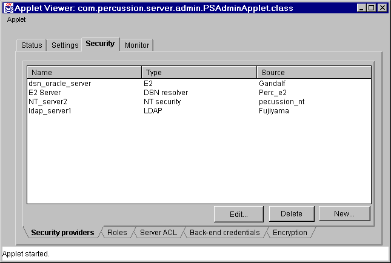

This module handles all security related settings of E2 server. There are five different types of security settings for E2 server. Each one of the following are handled in a separate panel of this module UI
Another symantec.itools.awt.TabPanel, with tabs to the bottom, is used to manage the above groups.
Security providers
Security providers form a critical piece of the E2 security system. Every user who tries to access the system and is required to log on (applications can define anonymous access which doesn't require authenticated users), must be authenticated on some security provider. These entries will usually be set up when the E2 server is installed
Security provider data will be stored in E2 server object store. The tables for security provider will be created when E2 server is installed.
E2 handles four different types of security providers
Admin applet manages the security providers for the E2 server. Applet requests E2 server to provide the available security providers. E2 server sends the com.percussion.util.PSCollection object with containing list of PSSecurityProvider object types.
Note:This spec assumes E2 server or Designer defines PSSecurityProvider abstract class and PSLDAPSecurityProvider, PSE2SecurityProvider, PSNTSecurityProvider and PSWebSecurityProvider classes.
Admin applet displays the security providers from PSCollection object in the providers list control (symantec.itools.awt.MultiList object). The provider will be listed with different icons to indicate different types of providers.

Edit security providers
This will allow changes to the currently selected security provider in the list. Depending on the provider type the the following information can be updated.
LDAP Security provider details
For more details on LDAP Security provider details dialog, see com.percussion.server.admin.PSLdapDetails class
E2 Security provider
After filling the Server name, database and connection information press Lookup button to get the all the available attributes to select from. Alternatively you can use new button to and type the name of the attribute, if you know the attributes..
For more details on E2 Security provider dialog, see com.percussion.server.admin.PSE2Details class
NT Security provider
For more details on NT Security provider dialog, see com.percussion.server.admin.PSNTDetails class
For more details on Web Security provider dialog, see com.percussion.server.admin.PSWebDetails class
After making changes to provider data press OK button to update this data in the E2 server. Admin Applet sends
update request to E2 server with the new data for the currently edited provider only.
Add New security provider
New button can be used to add a new security provider into the E2 server. When New button is selected, it brings up a dialog to select the provider type to add. Select the provider type you want to add and press Next>> button. This will bring up one of the above dialog boxes (used to edit security providers). Fill the necessary data and press OK to add the provider to E2 server. Applet send a command to add provider with all the data
Select provider type to Add
For more details on provider type dialog, see com.percussion.server.admin.PSNewProviderTypeDialog class
Delete security provider
Delete will send Delete command to E2 server with security provider name and clears the sleeted item from list control on successful deletion.
Roles
Role is collection of user or group entries. An entry in a role can be User, Group, Machine DNS name, IP address or a search filter. Roles provide a convenient way to manage access control list for applications. Each member can have security provider specified.
com.percussion.design.objectstore.PSRoleSet class will be used to get roles from E2 server. This role set contains collection of com.percussion.design.objectstore.PSRole objects. This role set will be enumerated and displayed in the customized MultiList control.List control will be customized to expand and collapse on role members.
The Role name will occupy a row in the list control with an Role cons as well as +, - icons to represent expanded or collapsed state for its members.
Each member of the role will be a child of role with member type icon and lines representing tree type hierarchy. member type, provider type will be shown in the extra columns.
Note:V1 will get all the roles and display them in the list. Depending on the performance future versions may implement virtual controls to read and show partial roles.
Delete
Delete button will delete the selected item from list. If the selected item is role, all its members will also be deleted. Applet will send changed role data to E2 server with update command to update and delete command to delete Role (Delete members will be handled in update role command). Add role will send New role command to E2 server
Add member(s)
Adds or removes members from selected role. If selected item in the list control is not role, this button will be disabled. Role members will be updated in the following dialog
Set the provider information and press Lookup button to get the possible members. The fetch has to go through E2 server because Applet can not connect to the server other than where it came from. This will send request to E2 server and get the data.
If you know the member names you can enter it by pressing new button. < and << buttons will remove members from this role. <, <<, > and >> buttons will be replaced by bitmap buttons with better icons.
If the member type if Filter the members list box will be grayed out and Filter string text box will be enabled to accept filter string.
For more details on Role members dialog, see com.percussion.server.admin.PSAddRoleMembers class
Add role
Add a new role by clicking on this button.
Once the role is entered select Add Members button to add members to this new role. For more details on add role dialog, see com.percussion.server.admin.PSAddRole class
Server ACL
Applet requests ACL from server and constructs com.percussion.design.objectstore.PSAcl class from the data server sends in.getEntries method of this object gives the collection of com.percussion.design.objectstore.PSAclEntry objects. These objects will be shown in symantec.itools.awt.MultiList control as shown here
The *s in this dialog will be replaced with check mark bitmap and image list be included for the items in this list control.
There will be only one Server ACL object for each E2 server in the object store.When E2 server is installed the server ACL will be created in the object store with default access entry.
Edit
Select an item in the list and click Edit button to update an ACL entry. The selected item will be shown the dialog
Pressing OK will update the entry into E2 server. Cancel will close this dialog without updating the ACL Entry. For more details on ACL Entry details dialog, see com.percussion.server.admin.PSAclEntryDetails class
Note: There are some differences in ACL entry properties between E2 designer and this dialog (Query access etc.). Some of them may not be relevant to server ACL
Delete
Deletes the selected entries from server ACL and updates this list control.
New
Creates new ACL Entry object and sends request for E2 server to update its ACL. This will bring the same dialog that is shown in the Edit option with empty fields. Enter the appropriate values and press OK to add new entry into ACL.
Back end credentials
Credentials contain information needed to logging to a back-end data source. Both public (server level) and private (application level) credential aliases exist. Only public aliases can be added / edited via the administration client. Designer uses these credentials when creating applications.
com.percussion.design.objectstore.PSBackEndCredential class is designed to handle credentials. We may need a collection class (extension of PSCollection) to handle all the server level credentials. Credentials will be stored in the object store. When E2 server is installed it will create table in object store for credentials.
Edit
This will allow to make changes to a selected credential. The following credential details screen comes up with details. Make changes and press OK to update the credential. This will send a update request to E2 server with new credential data and old credential name.
For more details on credential alias details dialog, see com.percussion.server.admin.PSAliasDetails class
Delete
Deletes the current selection from credential list. This will send delete command with credential name to E2 server.
New
This brings up the same dialog shown in Edit operation without any data. Enter the credential data and press OK to add new credential to E2 server. The server will send Add credential command with the data to add credential to the object store.
Encryption
This screen defines default encryption level and key length for applications and administration client. V1 does not use this because we can not support SSL through Java easily. Admin client uses SSL for first logging screen (HTML screen) but all the actions done in applet will not be SSL complient.
These settings will go as part of PSServerConfiguration object on E2 server.
Note: As per Paul's comments the error pages are removed from encryption screen. So this screen looks different
from the one shown in functional specification